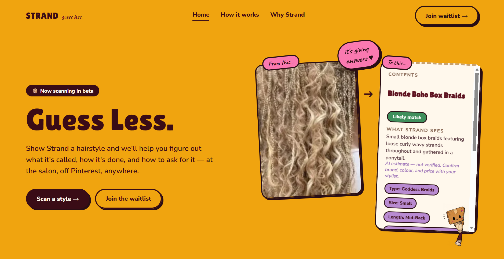

Building AI that works for the peopleit wasn’t built for.
I’m Taylor Adhiambo, founder of Strand and an analyst in Nairobi. I build products for markets that technology tends to overlook, and I care about making sure the AI those markets adopt actually works for them.
Strand

You see a hairstyle you love and can’t name it. At the salon you show a blurry screenshot and hope your stylist sees what you see. Strand fixes that: upload a photo and it tells you what the style is called, how it’s done and how to ask for it.
I started Strand in 2026 and built it end to end, from the style taxonomy and data collection plan to the web app and AI pipeline. The focus now is a proprietary dataset, built with hairstylists in Nairobi, ahead of a public launch in Kenya. Read the project overview
What Strand has taught me
-
AI can fail quietly
The leading vision model I started with couldn’t read most photos or results given were the same for different images Nothing flagged it. I only found out by testing it on the people Strand is for.
-
The data is the product
Swapping models wouldn’t fix a gap in the data, so Strand is building its own dataset with the stylists who do these styles every day. It’s the fix and the competitive advantage.
-
Say what you don’t know
Every Strand result is labelled as an AI estimate, with a prompt to confirm details with your stylist. An AI that sounds more certain than it is loses trust fast.
About
By day I’m an analyst at Zamara, where I advise pension fund trustees on investment strategy. The work has taught me to make decisions with incomplete data and to explain them clearly to people who aren’t technical.
I’m most interested in where business, technology and Africa’s fast-growing markets meet, and in building things that are useful, trustworthy and commercially sound.
Experience
- 2026 to nowFounder, Strand
- Oct 2024 to nowActuarial Analyst, Zamara Actuaries, Administrators and Consultants
- OngoingJunior Software Developer, Power Learn Project
- Jan to Feb 2024Group Life Underwriting Intern, Pioneer Assurance
- Jan to Mar 2022Field Data Collector, Deloitte
Education
- 2019 to 2024BSc Actuarial Science, Jomo Kenyatta University of Agriculture and Technology, Second Class Honours (Upper Division)
- Feb 2026IFoA examinations CB1 to CB3, Institute and Faculty of Actuaries